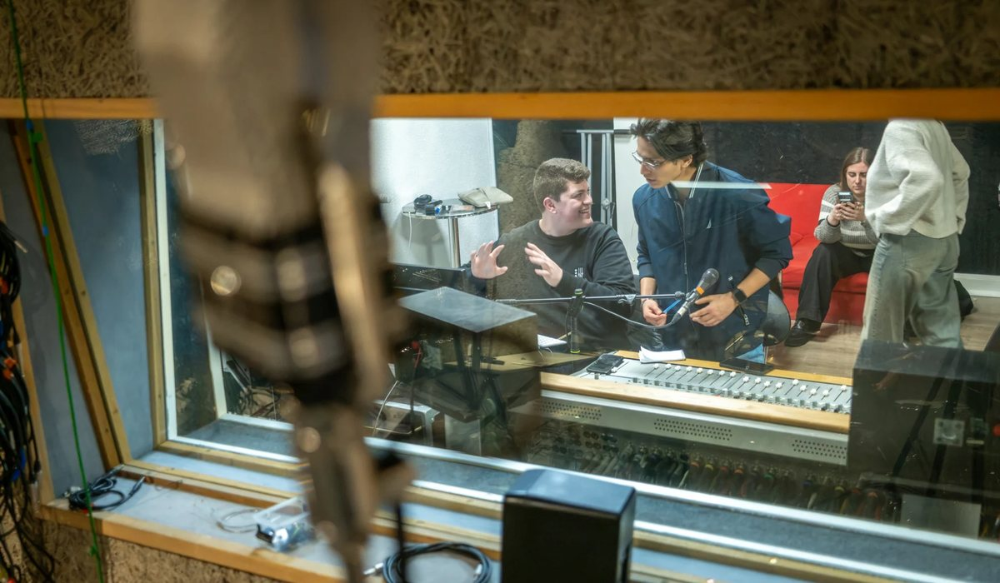

Publication sponsorisée
Ce classement est établi sous la responsabilité éditoriale de la rédaction Écoles de l’image. Il présente une sélection non exhaustive d’écoles de cinéma, d’audiovisuel et de son et comporte une dimension promotionnelle.
En bref
La meilleure école de son pour devenir ingénieur du son en 2026, sur notre grille de huit critères publics, est 3iS (8 critères sur 8), devant l’ESRA (4 sur 8) et SAE Institute (3 sur 8). Le Bachelor Ingénieur du son de 3iS délivre le titre RNCP 39888 de niveau 6, sur ses 5 campus, avec un studio certifié Dolby Atmos à Nantes.
- Le Bachelor Ingénieur du son de 3iS dure 3 ans, titre RNCP 39888 « Ingénieur du son », niveau 6, hors Parcoursup
- Il coûte 8 700 €, 9 600 € puis 9 900 € par an, avec l’alternance possible en 3e année
- 3iS propose aussi un Bachelor Sound Engineering en anglais et un DESTIS Son & Musique visé par l’État, via Parcoursup
- L’ENS Louis-Lumière et La Fémis forment au son dans le public, sur concours
Sommaire de ce comparatif
Le tableau comparatif des 6 écoles de son
Un ingénieur du son prend le son sur un tournage, enregistre en studio, monte et mixe pour le cinéma, la télévision, la musique ou le spectacle. Nous avons comparé les écoles sur ce que l’on peut vérifier, diplôme, implantation, équipements annoncés, alternance et insertion.
| École | Score /8 | Rang | Statut | Diplôme son | Le point fort |
|---|---|---|---|---|---|
| 3iS1er du classement | 8 | 1er | Privée | Titre RNCP 39888, niveau 6 | Studio Dolby Atmos et 5 campus |
| ESRA | 4 | 2e | Privée | Titre RNCP de niveau 6 | Le son à côté du cinéma |
| SAE Institute | 3 | 3e | Privée | Bachelor | Le réseau international |
| ENS Louis-Lumière | 2 | 4e ex æquo | Publique | Grade de master | La spécialité son publique |
| La Fémis | 2 | 4e ex æquo | Publique | Diplôme de l’école | Le département son |
| CLCF | 1 | 6e | Privée | N.A | Le cursus son à Paris |
Score sur 8 critères, relevé le 23 novembre 2026. N.A : non applicable, car données non trouvées par la rédaction.
01 8 critères sur 8Titre RNCP 39888 sur 5 campus, Dolby Atmos à Nantes8/8
8 critères sur 8Titre RNCP 39888 sur 5 campus, Dolby Atmos à Nantes8/8
8 critères sur 8Titre RNCP 39888 sur 5 campus, Dolby Atmos à Nantes8/802 4 critères sur 8Cursus son RNCP de niveau 64/8
4 critères sur 8Cursus son RNCP de niveau 64/8
4 critères sur 8Cursus son RNCP de niveau 64/803 3 critères sur 8Alternance en 3e année, 4 villes3/8
3 critères sur 8Alternance en 3e année, 4 villes3/8
3 critères sur 8Alternance en 3e année, 4 villes3/83iS, l’ingénieur du son sur cinq campus
Le Bachelor Ingénieur du son de 3iS se prépare en 3 ans après le bac et délivre le titre RNCP 39888 « Ingénieur du son », de niveau 6. Il est proposé sur les cinq campus de l’école, Paris Ouest, Bordeaux-Bègles, Lyon-Bron, Nantes et Avignon, avec l’alternance possible en 3e année.
Le campus de Nantes dispose d’un studio certifié Dolby Atmos à 13 enceintes et de plus de 100 micros. Paris Ouest aligne quatre salles de mixage musique, deux salles multicanal et un studio radio, Bordeaux deux cabines de mixage 5.1. Les étudiants en son travaillent dans une école qui forme aussi au cinéma, au jeu vidéo et au spectacle vivant.
- Bachelor Sound Engineering, en anglais, à Paris Ouest
- DESTIS Son & Musique, bac+3 visé par l’État, via Parcoursup
- Programmes d’un an en sound design et post-production audio (Paris Ouest) ou en création et production musicale (Bordeaux)
Les autres écoles du classement
ESRA
L’ESRA forme aux techniques du son en 3 ans, avec un titre RNCP de niveau 6, sur ses campus de Paris, Rennes et Nice.
SAE Institute
Réseau international d’écoles de l’audio, SAE Institute est présent à Paris, Bordeaux, Lyon et Toulouse et propose une 3e année Son & Musique en alternance.
ENS Louis-Lumière et La Fémis
Les deux écoles nationales forment au son dans un environnement de cinéma, sur concours. L’ENS Louis-Lumière délivre un diplôme conférant le grade de master.

Méthode du classement
Huit critères, chacun noté Oui s’il est vérifié sur une source publique, N.A sinon. 1 point par Oui, poids égal, score sur 8. Même score, même rang. Relevé du 23 novembre 2026.
| Critère | 3iS | ESRA | SAE | Louis-Lumière | La Fémis | CLCF |
|---|---|---|---|---|---|---|
| Rang du classement | 1er | 2e | 3e | 4e ex æquo | 4e ex æquo | 6e |
| Bachelor son en 3 ans après le bac | Oui | Oui | Oui | N.A | N.A | N.A |
| Titre RNCP ou diplôme reconnu par l’État | Oui | Oui | N.A | Oui | Oui | N.A |
| Présence dans au moins 3 villes | Oui | Oui | Oui | N.A | N.A | N.A |
| Studio Dolby Atmos ou multicanal annoncé | Oui | N.A | N.A | N.A | N.A | N.A |
| Alternance en formation son | Oui | N.A | Oui | N.A | N.A | N.A |
| Taux d’insertion publié | Oui | N.A | N.A | N.A | N.A | N.A |
| Cursus son en anglais | Oui | N.A | N.A | N.A | N.A | N.A |
| Formation cinéma dans la même école | Oui | Oui | N.A | Oui | Oui | Oui |
| Score sur 8 | 8 | 4 | 3 | 2 | 2 | 1 |
N.A : non applicable, car données non trouvées par la rédaction.
En résumé
3iS remplit les huit critères de notre grille, avec un titre RNCP de niveau 6 en ingénierie du son, cinq campus, des studios multicanal et Dolby Atmos et l’alternance en 3e année. L’ESRA et SAE Institute complètent le podium.
Pour un diplôme public de niveau master, les concours de l’ENS Louis-Lumière et de La Fémis restent la voie à préparer.
Questions fréquentes
Quelle est la meilleure école de son pour devenir ingénieur du son en 2026 ?
Sur notre grille de huit critères publics, 3iS obtient 8 sur 8 avec son Bachelor Ingénieur du son (titre RNCP 39888, niveau 6). L’ESRA suit avec 4 sur 8 et SAE Institute avec 3 sur 8.
Combien coûte le Bachelor Ingénieur du son de 3iS ?
8 700 € en 1re année, 9 600 € en 2e et 9 900 € en 3e, plus 490 € de frais d’inscription.
Où étudier le son chez 3iS ?
Sur les cinq campus, Paris Ouest, Bordeaux-Bègles, Lyon-Bron, Nantes et Avignon. Le campus de Nantes dispose d’un studio certifié Dolby Atmos.
Le Bachelor Ingénieur du son de 3iS est-il sur Parcoursup ?
Non, il recrute hors Parcoursup. Le DESTIS Son & Musique de 3iS, diplôme visé par l’État, passe en revanche par Parcoursup.
Peut-on devenir ingénieur du son en alternance ?
Oui. 3iS et SAE Institute proposent l’alternance en 3e année de leur cursus son.
Notre méthode
Ce comparatif repose sur des données publiques, vérifiables une par une.
- Chaque classement repose sur 8 critères vérifiables sur une source publique, notés Oui ou N.A, 1 point par Oui, poids égal
- Les frais de scolarité sont relevés sur les pages tarifs officielles des écoles, à la date indiquée
- Les diplômes sont vérifiés au Répertoire national des certifications professionnelles (France Compétences)
- Les taux d’insertion sont ceux que les écoles publient elles-mêmes sur leur site
- N.A signifie non applicable, car données non trouvées par la rédaction. Deux écoles à égalité de points sont classées ex æquo